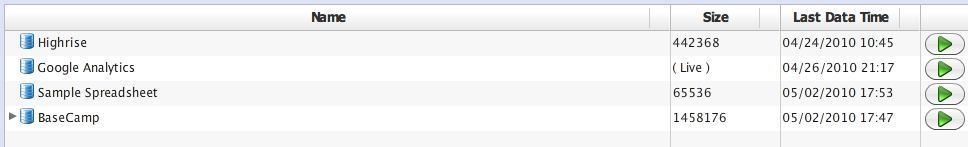
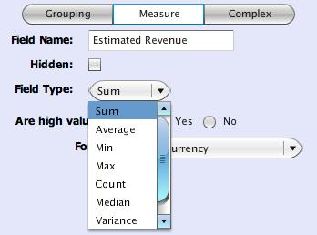
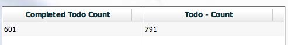
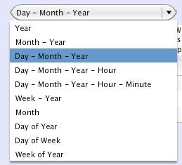

Report Editor Documentation
Need help building reports in Easy Insight? Here's the documentation to guide you through the process.

Table of Contents
- How do I create a new report?
- How do I assemble a basic report?
- What are these field types?
- How do I show a measure as something other than a sum?
- How about if I want to do a custom calculation like Revenue / Units?
- What if I want to filter the data shown on the report?
- What if I want to create a dedicated field for something like "Completed Todo Items?"
- How do I show a summary row on a list?
- How do I look at different date aggregations?
- What are hierarchies and how do I use them?
- How do I use trees and tree maps?
- How do I link to external URLs from a report?
- How do I tie together reports through links?
- How do I export a report to Excel?
- How do I share a report with other users in my account?
- How do I automatically email out a report on a scheduled basis?
How do I create a new report?
You can create reports from the My Data page by double clicking on a Data Source or clicking the Analyze... button on the right side of the Data Source row under My Data.
How do I assemble a basic report?
For the data source you've opened, you'll have a set of available fields down the left hand side of the report editor. You can create reports by dragging these fields into the Drop Areas to the right. You can also double click on fields to automatically add them to the report. And finally, you can right click on fields and choose "Add to Report."
What are these field types?
You'll notice that fields have a basic type indicated by an icon to the left of the field in that left hand list. Basic field types are as follows:
- Grouping
- A grouping represents a value by which you'll want to group up data. For example, Customer, Deal Status, and Responsible Party are examples of groupings.
- Measure
- A measure represents a numeric metric which you'll want to aggregate by some mathematical operation. Revenue and Quantity are examples of measures. Numbers are not necessarily measures--you might have something like Deal ID which is a number, but does not represent a metric you'd want to sum or average.
- Date
- A date simply represents a point in time.
How do I show a measure as something other than a sum?
Measures typically default to display as Sum. You can change this by clicking on the Edit icon of the Drop Area where you've added a field.
There are a number of available options for aggregation types:
- Sum -- Sums up the data (A + B + C). For most fields, this aggregation will be the default.
- Average -- Averages the data (A + B + C) / N.
- Min -- Calculates the minimum value of the data set.
- Max -- Calculates the maximum value of the data set.
- Count -- Calculates the number of rows in the data set.
- Median -- Calculates the median value of the data set.
- Variance -- Calculates the variance of the data set, useful for more complex calculations.
- Rank -- Calculates the rank of each row in the data set.
How about if I want to do a custom calculation like Revenue / Units?
You can define custom calculations from the report editor by clicking the Create Calculation button found under the Data tab.

At the most basic level, you can drag fields from the left hand list into the Calculation text area to quickly fill in names. The basic operators of +, -, *, and / are supported. You can use parentheses as you'd expect to control order of operations.
You can optionally surround fields with brackets ([]) as you see in the example to the left with Deals - Count. If the field has an operator in it, like - in this case, you'll need to surround it with brackets to ensure that it doesn't try to subtract two nonexistent fields.
Easy Insight supports a basic set of functions to augment these simple calculations. This set of functions will be expanded over time. The most important (and tricky) at the moment are the various cast functions. You might find yourself needing to explicitly state the aggregation of a given field within a calculation. For example, if you want to divide the maximum Deal Amount by the sum of Deal Amounts. You can achieve this by using an expression of castmax(Deal Amount) / castsum(Deal Amount). You'll see the various cast functions under the Data Type folder in the Available Functions tree.
What if I want to filter the data shown on the report?
You can define filters by dragging fields from the left hand list into the Filter tab. You can also right click on a field and choose "Filter on this Field." Depending on the field type, you'll get a set of appropriate filter types as choices.
If the field is a grouping, you can choose from the following set of filters:
- Combo Box -- represents itself to you as a combo box, restricting the chosen field to one value
- Multi Value -- allows you to choose multiple values from a swap box for the chosen field
- Pattern Match -- enables you to define a pattern using wildcards (*) or regular expressions
If the field is a date, you can choose from the following set of filters:
- Absolute -- enables you to choose two absolute dates for the filter
- Rolling -- represents a rolling time window
- Last Value -- show only the latest row of data
If the field is a measure, you'll be able to define a measure filter. With a measure filter, you can define a start value and an end value to restrict the report to rows where that value is in the specified range. You can leave either value blank to filter down to only values greater than or less than a certain value.
What if I want to create a dedicated field for something like "Completed Todo Items?"

You can apply filters at an individual field level as well. For example, you might want to create a field which shows only those todo items where Completed = True. You can accomplish this goal by right clicking on the starting field (Todo Count) and choosing Copy Field. You'll be prompted with the usual field editor. You can change the field name to something more appropriate. Next, click on the Filters tab of the editor. Just as you create report wide filters, you can drag fields into this tab to create filters at a field level.
Once you've created this new field, you can drag it into the report editor just as you work with any other field. For example, in the screenshot to the right, I've taken the newly created Completed Todo Count and added it to the report next to the standard Basecamp Todo Count measure.
How do I show a summary row on a list?
First, click on the "Edit List Properties..." button at the upper left corner of the list. Next, toggle the "Summarize Rows" checkbox. Upon saving changes to the list configuration, the report will refresh and display a summary row at the bottom of the list showing the rolled up values for all measures in the report.
How do I look at different date aggregations?
Typically, dates will default to displaying at a Day level. You'll often find yourself wanting to look at a different date level. You can accomplish this goal by clicking the Edit button next to the date you've added to the report. You can choose a variety of options from the Date Level combo box. Year, Month - Year, Year - Month - Day, Year - Month - Day - Hour, Year - Month - Day - Hour - Minute, and Year - Week simply display the date values at those levels of aggregation. Month, Day of Year, Day of Week, and Week of Year display data as grouped up by that value alone--this view enables you to analyze in terms of questions like "What's my typical visitor traffic on Monday vs. Wednesday?" or "How does my order traffic vary with seasonality?"
What are hierarchies and how do I use them?
Hierarchies allow you to define a relationship between different groupings to enable rollup and drilldown. For example, you might define a hierarchy of Country -> State -> City or Industry -> Company -> Deal. You can define hierarchies from the report editor by clicking on the Create New Hierarchy button under the Data tab. From here, you'll have a list of available groupings. You can drag groupings from this list into the area to the right to define the hierarchy from top to bottom. You can reorder groupings within the hierarchy. You can also delete groupings by hitting the Delete key while you have the target level selected.
Once you've defined a hierarchy, you can use it in a report just as you use any other field. Certain reports, notably Trees and Tree Maps, require you to define a hierarchy. For other reports, you'll be able to drill through the hierarchy by right clicking or shift-left clicking on the hierarchy value and choosing Drill Down to navigate into the next level of the hierarchy.
How do I use trees and tree maps?
You'll need to define a hierarchy as mentioned above. Once that's done, you can drag the hierarchy into the "Drop Hierarchy Here" drop area of the report.
How do I link to external URLs from a report?

You can define links to external URLs by editing a grouping and choosing the Links tab. Click on Create a Link. The default option allows you to associate groupings with external URLs. Fill in a Label for the URL Link--this is the value that will appear when you right click on the grouping in a report. For the URL, you can add dynamic elements to the URL, such as query parameters, by surrounding the field name you wish to add to the URL with brackets. You can add multiple fields to a given URL if necessary.
How do I tie together reports through links?
Drillthroughs enable you to connect multiple reports within a shared context. You can define drillthroughs by editing a grouping and choosing the Links tab. Click on Create a Link. Change the radio option to Drillthrough. Fill in a label for the drillthrough--this is the value that will appear when you right click on the grouping in a report. Choose another report as the target report. Any filters on the target report will automatically populate based on filters in the source report, as well as populating on the grouping you drill from. For example, if you have one report showing a list of suppliers and a chart showing detailed information filtered by supplier, connecting the two reports through drillthrough will automatically populate the appropriate supplier on the target report.
How do I export a report to Excel?
Change to the Export tab in the report editor and click on the Export to Excel button.
How do I share a report with other users in my account?
Change to the Sharing tab in the report editor and click on the Add Report to Group button. Choose the appropriate group from your account.
How do I automatically email out a report on a scheduled basis?
You can set up a report to email out from Easy Insight on a scheduled basis. At the moment, the only supported export format for reports over email is Excel. We'll be adding further formats in the near future. You can define report delivery through My Data -> Scheduling. Available refresh intervals are Daily, Weekdays (Monday -> Friday, sorry, no business calendars yet), Monday/Wednesday/Friday, Tuesday/Thursday, Day of Week, and Day of Month. Refresh times are defined in terms of your locale time zone, so if your computer is running in Eastern Standard Time, you will define the refresh in terms of Eastern Standard Time. Times are presented on a 24 hour clock.